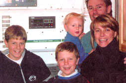
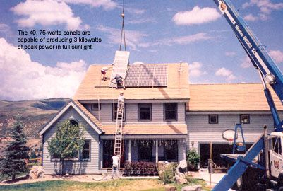
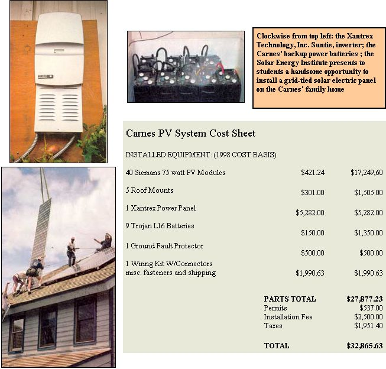

Solar power, utilities and the beauty of a backwards spinning meter.
So with the country dangling on a thin wire between formidable possibilities, my wife and I decided to proceed with the next logical step: Build an addition onto the house.
We live roughly 7,500 feet above sea level in the Rocky Mountains, which means that our proximity to the sun's powerful rays, as well as our electric bills, are skyhigh. I had always been interested in solar power, and since we would be constructing a new roof anyway here was an opportunity to install solar panels on our house.
Most small towns do not usually have a listing for "solar energy," so the first (and only) place we began looking was the Internet. Typing in the ambiguous to term "solar panel" brought 88,126 possible hits.
"Solar panel installation" narrowed it down to a mere 3,489, while "solar panel installation Colorado" tapered the listing to a workable 212. What a pleasant surprise it was to find listed on the very first page, no less - the Solar Energy Institute (SEI) of Carbondale, Colorado, a mere hop, skip and a jump over one mountain pass from our home in the Vail Valley.
The word "Institute" alarmed me a bit. I was convinced I would be talking to a group of scientists and listening to hours of brain draining solarbabble. But what (or who) I found instead was Ed.
Ed is a soft-spoken, gentle, articulate individual who seemed genuinely interested in answering my simpleminded ("What does PV stand for?") questions. We spent more than half an hour on the phone, and Ed followed up the next day via e-mail. I stumbled upon no less than one of the world's most prestigious schools for studying and exploring the possibilities of solar power.
The first real hurdle we had to clear was determining what type of system we really needed. Our so-called secluded community high up in the Rockies includes 5,000 other let's-get-away-from-it-all souls, so it's not as if we were off the power grid. Therefore, a line-tied system made perfect sense. This type of solar system would allow us to install our very own miniature power plant on the roof, with the option of selling the excess generated power back to the utility company via the grid.
It was a perfect arrangement, but it still required a bit of planning . As an uncle of mine used to say, "Don't jump off a diving board wearing a bikini." That is, be pre pared for the unexpected.
Utility companies make their money one very simple way: by generating energy and then selling it to customers. Why in the world would they want to buy it from me? Wouldn't I be a competitor?
Yet lo and behold, within a few weeks, Ed had a completed form direct from Holy Cross Electric giving their blessing, so to speak, to our planned event. Without waiting another second, we provided the initial deposit and set a construction date.
Being a school, SEI saved us a great deal of money by using our house as a class project. Of course, the thought of a first-year college student poking large holes in my roof came immediately to mind, but Ed and his staff quickly put those fears to rest.
"Our school is comprised of top-notch individuals from all over the world who have one common goal: to learn about and spread the knowledge of solar energy around the planet. Our students range from an 18-year-old science nerd already in his third year of college to a 63-year-old retired electrical engineer interested in bringing solar capabilities to decaying areas of Africa."
To top it off, these "students" were paying hefty fees for the privilege of learning the advantages of solar energy and how to apply them to the real world. These ladies and gentlemen were the real thing - goodhearted souls with a burning desire to help change the world.
Two weeks later, 21 students prepared to spend the next three days turning our simple shingled roof into a 3,000-watt lethal, but legal, power plant.
Day one was full of prep work. Dozens of large holes were drilled in the roof. Seemingly miles of wires were channeled down through well-placed tubing, all culminating at a predetermined location in the corner of our garage.
Day two was reserved for the crane truck, which took up all of our driveway and half of the street just to get stabilized. Hoisting eight $2,500 panels 75 feet in the air on a windy day was not an easy sight for the weak (or thrifty) to see, but this was a commitment we had made as a family. Damage from falling debris or unbalanced cranes was something for insurance companies to worry about, not us.
Day three was the climax. Hour upon hour was spent connecting hundreds of different wires, while a container to hold nine deep-cell batteries was placed in the garage. After what seemed like a lifetime of repetitive testing on gauges and other equipment the moment of truth arrived.
All of the students, teachers, family members, and even a few neighbors gathered at ground zero in the garage. Ed gave a short but eloquent speech, outlining what had taken place over the previous three days. One student held the cork down on a bottle of champagne, waiting for the precise moment, while the others giggled like schoolchildren waiting for the bell to ring. My family and I stood proudly, our hearts pumping with anticipation at the first generxated watt.
Hoisting eight $2,500 panels 75 feet in the air on a windy day was not a sight for the weak (or thrifty) to watch
Ed reached over and flipped the big switch labeled "A".
And nothing happened. No bells, no whistles, no alarms, no power producing sounds whatsoever.
Ed's smile grew from ear to ear as the rest of the class let go with a tremendous "Hip-hip, hooray!"
We just stood there dumbfounded. What was happening? Why was everybody so damn happy? Had we just spent a great deal of money for nothing?
"Perfect," Ed said, calmly. He began p ushing buttons on the miniature screen that was part of our AC/DC inverter on the garage wall.
"Perfect? Nothing's happening. How can you say it's perfect?" I asked politely, but with an edge of uncertainty that Ed had seen through from the beginning.
"That's exactly what it's supposed to do," he replied. "No sounds, except maybe for the cooling fan inside the inverter. Look here, see these numbers? Well, this one tells you how many amps you're currently creating, while this one..."
And he continued for the next few minutes. I stared in awe but listened with great intent as he explained what was silently taking place upon my roof. It was not only working perfectly, but their experiment with an extra battery (nine instead of the standard eight) was adding to our total capabilities as they had hoped.
"Do you want to see it really working?" Ed asked the crowd.
We responded enthusiastically, and Ed quickly walked out of the garage and down to the street. My family and the rest rushed to follow, not really sure what we were about to witness. The sun was burning bright on a typical 75'F July afternoon in the Rockies.
"Take a look at your electric meter. Then go across the street and look at your neighbor's meter."
I did as I was told and quickly returned, only this time the big smile was all mine.
"Ours is spinning backwards!"
And it was, which of course meant that our batteries were fully charged and that every extra ounce of amp our little power plant created was being sent back to the utility company. We were literally watching the solar panels pay for themselves right before our very eyes.
"Payback" in a PV system is a complicated proposition. Technically, we began to save most of our nearly $200 monthly electric bill as soon as we threw the switch. At a savings rate of, say, $150 a month, it would take 18 years for the system cost to find its way back to us. That assumes, of course, a static cost for utility power, and the millions who have endured a 100% increase in grid power cost just this year will strenuously argue that assumption.
So, with smiles all around, we quickly downed the lone bottle of champagne and broke out the beer and hot dogs. The sun would do the rest.
|
 |
|
 |
|
 |
|
|